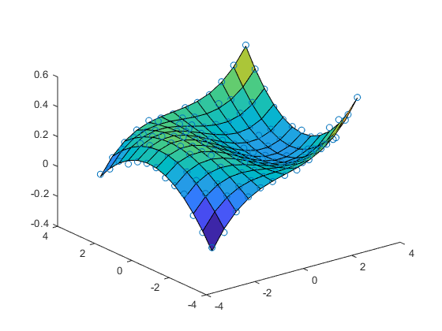
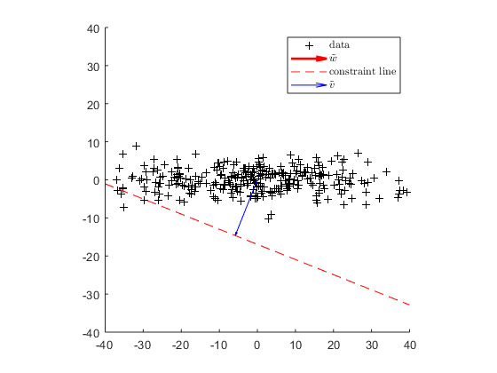
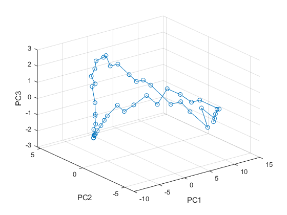

Contents
close all; clear
1 Trichromacy
load colMatch.mat;
- a)
Subjects match a random spectrum to the 3 primaries
N=31; randomLight=rand(N,1); matches=humanColorMatcher(randomLight,P)
matches =
1.0092
0.2037
0.6315
What subject actually generated from primaries is
matchLight = P*matches
matchLight =
0.4454
0.5315
0.5502
0.5565
0.5503
0.5441
0.5392
0.5363
0.5353
0.5457
0.5803
0.6299
0.6560
0.6615
0.6702
0.6795
0.6710
0.6606
0.6608
0.6583
0.6456
0.6378
0.6277
0.6277
0.6447
0.6882
0.7595
0.8380
0.8974
0.9342
0.9552
And the actually testing wavelength spectrum is
randomLight
randomLight =
0.8147
0.9058
0.1270
0.9134
0.6324
0.0975
0.2785
0.5469
0.9575
0.9649
0.1576
0.9706
0.9572
0.4854
0.8003
0.1419
0.4218
0.9157
0.7922
0.9595
0.6557
0.0357
0.8491
0.9340
0.6787
0.7577
0.7431
0.3922
0.6555
0.1712
0.7060
figure;hold on plot(randomLight) plot(matchLight) legend('randomLight','matchLight')

The two spectra look the same to the subject although they are acutually different because the dimension of the spectra (31) is much higher than human color perception (3). there are much more different spectra that have the same projection in lower dimension space.
- b)
expLight=eye(N); M=humanColorMatcher(expLight,P)
M =
Columns 1 through 7
0.0656 0.1369 0.2490 0.3403 0.3741 0.3421 0.2964
0.0008 0.0014 0.0014 -0.0027 -0.0125 -0.0261 -0.0447
-0.0384 -0.0798 -0.1439 -0.1913 -0.1989 -0.1643 -0.1157
Columns 8 through 14
0.2520 0.1629 0.0856 0.0341 -0.0061 -0.0394 -0.0564
-0.0734 -0.1025 -0.1340 -0.1826 -0.2512 -0.3059 -0.3100
-0.0538 0.0381 0.1299 0.2335 0.3643 0.4825 0.5278
Columns 15 through 21
-0.0632 -0.0637 -0.0573 -0.0485 -0.0356 -0.0220 -0.0102
-0.2725 -0.2015 -0.1016 0.0225 0.1553 0.2748 0.3542
0.5122 0.4479 0.3417 0.2004 0.0397 -0.1140 -0.2281
Columns 22 through 28
-0.0021 0.0021 0.0033 0.0031 0.0023 0.0014 0.0008
0.3761 0.3418 0.2663 0.1899 0.1221 0.0712 0.0380
-0.2816 -0.2739 -0.2209 -0.1608 -0.1047 -0.0613 -0.0329
Columns 29 through 31
0.0004 0.0002 0.0001
0.0206 0.0099 0.0051
-0.0179 -0.0086 -0.0045
- Verification
for ii = 1:5 disp(['test light',num2str(ii)]) randomLight=rand(N,1); matchesFunc=humanColorMatcher(randomLight,P) matchesMatx=M*randomLight disp('they are same! ') end
test light1
matchesFunc =
0.8071
0.0285
0.6635
matchesMatx =
0.8071
0.0285
0.6635
they are same!
test light2
matchesFunc =
1.0504
0.4609
0.0155
matchesMatx =
1.0504
0.4609
0.0155
they are same!
test light3
matchesFunc =
0.7001
0.1980
0.4594
matchesMatx =
0.7001
0.1980
0.4594
they are same!
test light4
matchesFunc =
0.8994
-0.3140
0.7825
matchesMatx =
0.8994
-0.3140
0.7825
they are same!
test light5
matchesFunc =
0.8398
0.0316
0.3819
matchesMatx =
0.8398
0.0316
0.3819
they are same!
- c)
figure; plot(Cones') legend('L (red)','M (green)','S (blue)')

for an random wavelength spectrum
randomLight=rand(N,1)
randomLight =
0.3685
0.6256
0.7802
0.0811
0.9294
0.7757
0.4868
0.4359
0.4468
0.3063
0.5085
0.5108
0.8176
0.7948
0.6443
0.3786
0.8116
0.5328
0.3507
0.9390
0.8759
0.5502
0.6225
0.5870
0.2077
0.3012
0.4709
0.2305
0.8443
0.1948
0.2259
The subject match it with another spectrum generated from primaries
matches=M*randomLight; matchingLight = P*matches
matchingLight =
0.4582
0.5486
0.5689
0.5755
0.5684
0.5615
0.5554
0.5502
0.5461
0.5529
0.5829
0.6262
0.6436
0.6390
0.6386
0.6417
0.6290
0.6153
0.6143
0.6118
0.5995
0.5918
0.5810
0.5804
0.5975
0.6428
0.7165
0.7971
0.8578
0.8952
0.9158
Two spectra produce equal cone absorption
absorptionRandomLight = Cones*randomLight absorptionMatchLight = Cones*matchingLight
absorptionRandomLight =
6.9552
5.6901
3.7157
absorptionMatchLight =
6.9552
5.6901
3.7157
because for any pair of light () that map to the same knob settings

In other words,  is in M's null space.
is in M's null space.
If cones matching matrix C has the same null space as M, then

would also hold true, which means that any pair of light that elicits the same behavioral response, i.e, knob settings, produces the same cone absorption, vice versa.
From SVD we can get the two null space,
[~,~,V_M]=svd(M); [~,~,V_cone]=svd(Cones); null_M = V_M(:,4:end); null_cone = V_M(:,4:end);
the two null space are the same because there will be no more addtional dimensions when we add columns from one to the other
svd([null_M,null_cone])
ans =
1.4142
1.4142
1.4142
1.4142
1.4142
1.4142
1.4142
1.4142
1.4142
1.4142
1.4142
1.4142
1.4142
1.4142
1.4142
1.4142
1.4142
1.4142
1.4142
1.4142
1.4142
1.4142
1.4142
1.4142
1.4142
1.4142
1.4142
1.4142
0.0000
0.0000
0.0000
There are still 28 = 31-3 non-zero singular values, as well as two null space respectively.
Alternatively, we can think of an arbitary spectrum  and the spectrum that the subject match it with primaries
and the spectrum that the subject match it with primaries  .
.
where x is the knob settings. both spectra should produce the same cone absorption

for every .
There should always be a unique matching. So
So  should be invertible, and is actually the color matching matrix,
should be invertible, and is actually the color matching matrix,
M_hat = (Cones*P)\Cones; error = M-M_hat; all(all(error<1e-10))
ans = logical 1
which should have the same null space as C, because any in 's null space, ,
- d)
randomLight=rand(N,5); % generate several test lights matchesNorm = humanColorMatcher(randomLight,P) % knob settings from normal subject matchesAlt = altHumanColorMatcher(randomLight,P) % from the patient
matchesNorm =
1.0657 1.0315 1.2389 1.2029 1.1009
-0.1349 -0.1484 -0.0776 0.0031 -0.0438
0.3883 0.6697 0.3797 0.3043 0.4798
matchesAlt =
0.8883 0.8303 1.0132 1.0359 0.8655
-2.2366 -2.5323 -2.7517 -1.9757 -2.8324
2.8121 3.4188 3.4635 2.5863 3.6957
They are totally different. I can't tell the pattern.
Cone absorption for test Light
Cones * randomLight
ans =
4.3830 5.6355 5.1750 5.1376 5.4634
3.8057 4.8594 4.4136 4.3031 4.6167
3.4448 3.5242 3.9975 3.8789 3.6620
Cone absorption for mixtures of matching primaries (normal)
Cones * P * matchesNorm
ans =
4.3830 5.6355 5.1750 5.1376 5.4634
3.8057 4.8594 4.4136 4.3031 4.6167
3.4448 3.5242 3.9975 3.8789 3.6620
Same Cone absorption
Cone absorption for mixtures of matching primaries (patient)
Cones * P * matchesAlt
ans =
4.3830 5.6355 5.1750 5.1376 5.4634
5.8414 7.1684 7.0037 6.2198 7.3177
3.4448 3.5242 3.9975 3.8789 3.6620
Cone absorption for red and blue cones are the same but green is random,
%So the patient may miss copies of green cone.
2 2D polynomial regression
load regress2.mat
- a)
x=D(:,1);y=D(:,2);z=D(:,3);
X=reshape(x,13,13);
Y=reshape(y,13,13);
Z=reshape(z,13,13);
figure;surf(X,Y,Z)
rotate3d on
- b) prepare predictors
p0 = ones(169,1);
p1 = [p0,x,y];
x2 = x.^2;
y2 = y.^2;
xy = x.*y;
p2 = [p1,x2,xy,y2];
x3 = x.^3;
y3 = y.^3;
x2y= x2.*y;
xy2= x.*y2;
p3 = [p2,x3,x2y,xy2,y3];
% regression
beta0 = (p0'*p0)\p0'*z;
beta1 = (p1'*p1)\p1'*z;
beta2 = (p2'*p2)\p2'*z;
beta3 = (p3'*p3)\p3'*z;
- order 0
z_hat = p0*beta0; figure;hold on scatter3(x,y,z) Z = reshape(z_hat,13,13); surf(X,Y,Z) view(3) rotate3d on
- order 1
z_hat = p1*beta1; figure;hold on scatter3(x,y,z) Z = reshape(z_hat,13,13); surf(X,Y,Z) view(3) rotate3d on
- order 2
z_hat = p2*beta2; figure;hold on scatter3(x,y,z) Z = reshape(z_hat,13,13); surf(X,Y,Z) view(3) rotate3d on
- order 3
z_hat = p3*beta3; figure;hold on scatter3(x,y,z) Z = reshape(z_hat,13,13); surf(X,Y,Z) view(3) rotate3d on
3rd order fit seems reasonable enough to capture the trend of the data
SE = (z-z_hat).^2; figure;hist(SE)
mean squared error
MSE = mean(SE)
MSE = 2.0500e-04
z_hat_allTerm = p3*diag(beta3); % decompose z_hat, one term for every predictors importance=sqrt(sum(z_hat_allTerm.^2,1)) % calculate vector length of each term
importance =
Columns 1 through 7
2.0556 2.1797 0.3722 0.0139 0.1927 0.3461 1.5516
Columns 8 through 10
0.0067 1.5088 0.0496
term  , and
, and  terms are not so important
terms are not so important
p3_drop = p3(:,importance>0.05); beta3_drop = (p3_drop'*p3_drop)\p3_drop'*z; z_hat_drop = p3_drop*beta3_drop; MSE_new = mean((z-z_hat_drop).^2)
MSE_new = 2.0785e-04
mean squared error only increase about 1%
3 Constrained Least Squares
load constrainedLS.mat
- a)
The original problem can be written as

s.t.  , where nth row in
, where nth row in  is $\vec{d}_n
is $\vec{d}_n
singular value decompose  , keep only first 2 colomns of U and first two rows of S
, keep only first 2 colomns of U and first two rows of S
[U,S,V] = svd(data,'econ');
let , and \tilde{w} = \tilde{S}^{-1} V^T \vec{w}$
w_tilde = S\V'*w;
thus
s.t. .
- b)
v_tilde = w_tilde/norm(w_tilde)^2
v_tilde = -5.8205 -14.6384
figure; hold on scatter(U(:,1),U(:,2),'k+') % first two columns of U is just transformed D quiver(0,0,w_tilde(1),w_tilde(2),1,'r','LineWidth',2) xx = v_tilde(1)+w_tilde(2)*(-250:250); yy = v_tilde(2)-w_tilde(1)*(-250:250); plot(xx,yy,'r--') quiver(0,0,v_tilde(1),v_tilde(2),1,'b') leg=legend('data','$\tilde{w}$','constraint line','$\tilde{v}$'); set(leg,'Interpreter','latex') axis equal xlim([-10,15]) ylim([-20,5]) hold off
- c)
v = V/S*v_tilde
v =
-0.3782
2.0200
figure; hold on scatter(data(:,1),data(:,2),'k+') % first two columns of U is just transformed D quiver(0,0,w(1),w(2),1,'r','LineWidth',2) tt= w/norm(w)^2 + [w(2);-w(1)]*(-5:5); plot(tt(1,:),tt(2,:),'r--') quiver(0,0,v(1),v(2),1,'b','LineWidth',2) leg=legend('data','$\vec{w}$','constraint line','$\vec{v}$'); set(leg,'Interpreter','latex') axis equal % xlim([-.25,.4]) % ylim([-.25,.4]) hold off
 is not perpendicular to constraint line in the original space, although is still on the constraint line.
is not perpendicular to constraint line in the original space, although is still on the constraint line.
Total least square solution:
v_tls = V(:,end);
figure; hold on scatter(data(:,1),data(:,2),'k+') % first two columns of U is just transformed D quiver(0,0,w(1),w(2),1,'r','LineWidth',2) plot(tt(1,:),tt(2,:),'r--') quiver(0,0,v(1),v(2),1,'b','LineWidth',1) quiver(0,0,v_tls(1),v_tls(2),1,'c','LineWidth',2) leg=legend('data','$\vec{w}$','constraint line','$\vec{v}$','$\vec{v}_{total\ least\ square}$'); set(leg,'Interpreter','latex') axis equal % xlim([-.25,.4]) % ylim([-.25,.4]) hold off

Solutions are different.
4 Principal Components
load PCA.mat
- a)
figure; plot(M) xlabel('time') ylabel('mean spike count')
There are several clusters of neuron, within which cell responses are similar. For example, there are 4 neurons that linearly ramp up slowly from beginning and peak at about 30th intervel and than ramp down. There are 4 neurons that elicit large peak at the middle of the trail. There are are a bunch of neurons that response weakly throughout the trail.
- b)
M_ = M - repmat(mean(M),50,1); % substract mean [U,S,~] = svd(M_);S = diag(S); figure;bar(S) t=title('singular values of $\tilde{M}$'); set(t,'Interpreter','latex')

"True" dimensionality of the response should be 3.
- c)
figure; plot(U(:,1:3)) xlabel('time') leg = legend('first eigenvector of $\tilde{M}\tilde{M}^T$',... 'second eigenvector of $\tilde{M}\tilde{M}^T$',... 'third eigenvector of $\tilde{M}\tilde{M}^T$'); set(leg,'Interpreter','latex')
first 3 eigenvectors looks like half integer sinusoids.
the fourth eigenvector
figure; plot(U(:,4)) xlabel('time') legend('fourth eigenvector')

looks messy.
- d)
figure; plot3(S(1)*U(:,1),S(2)*U(:,2),S(3)*U(:,3),'Marker','o'); xlabel('PC1');ylabel('PC2');zlabel('PC3') view(3) grid on rotate3d on
The trajectory forms a loop, composed of two half circle connected with an angle in the PC3 dimension.
close all